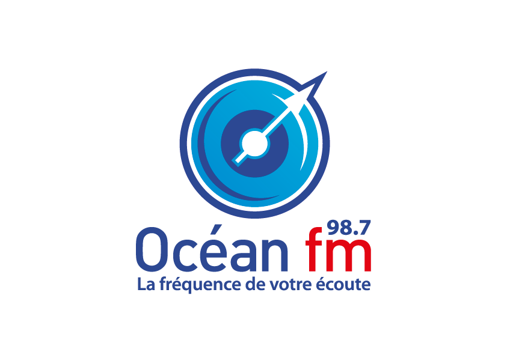
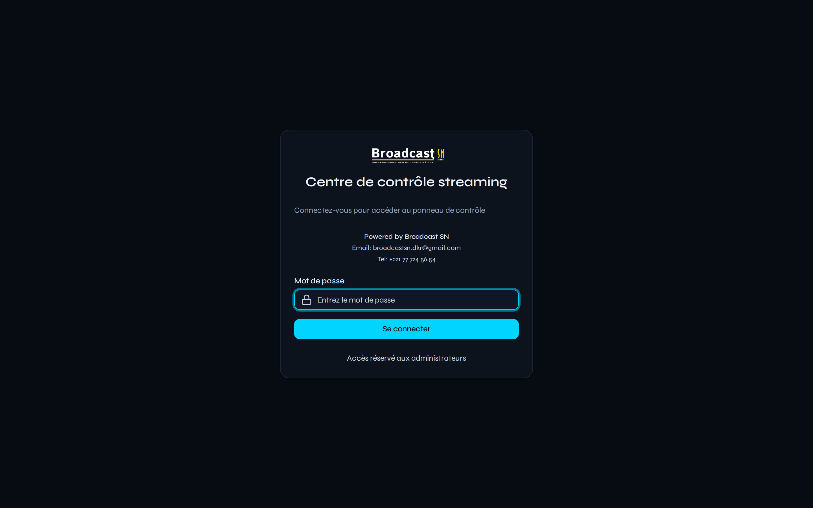
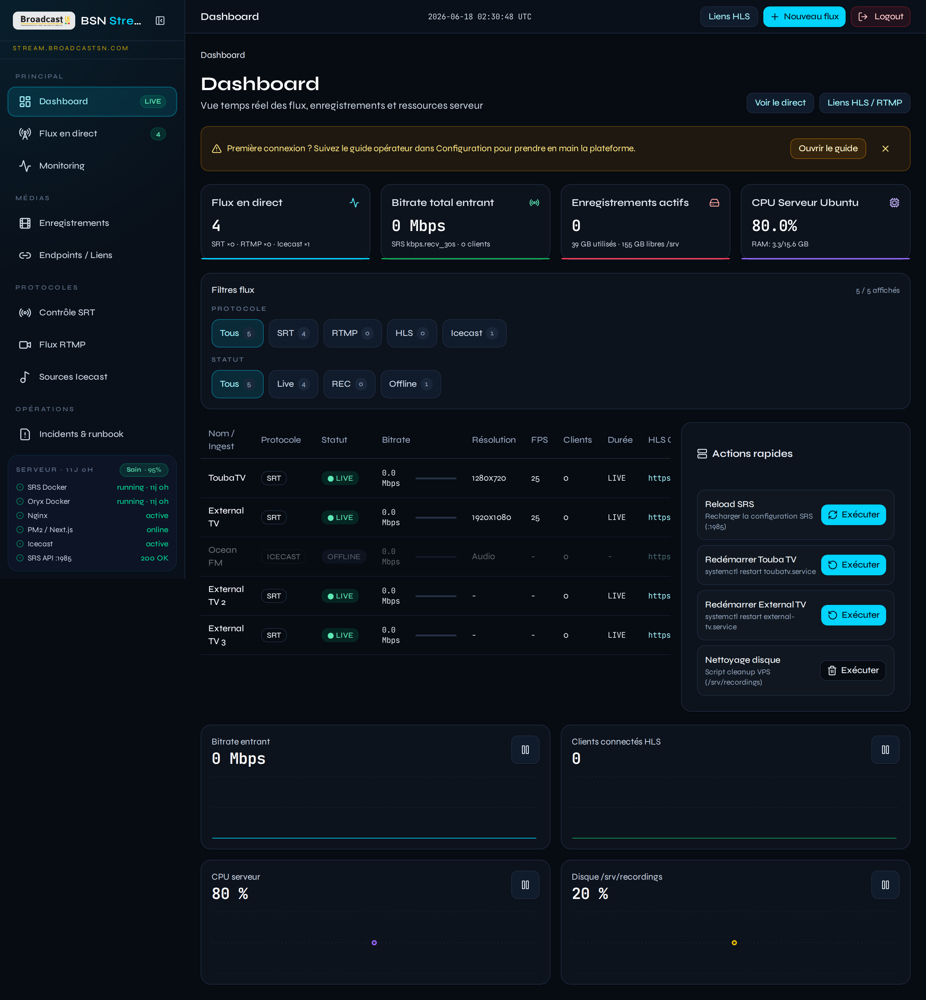
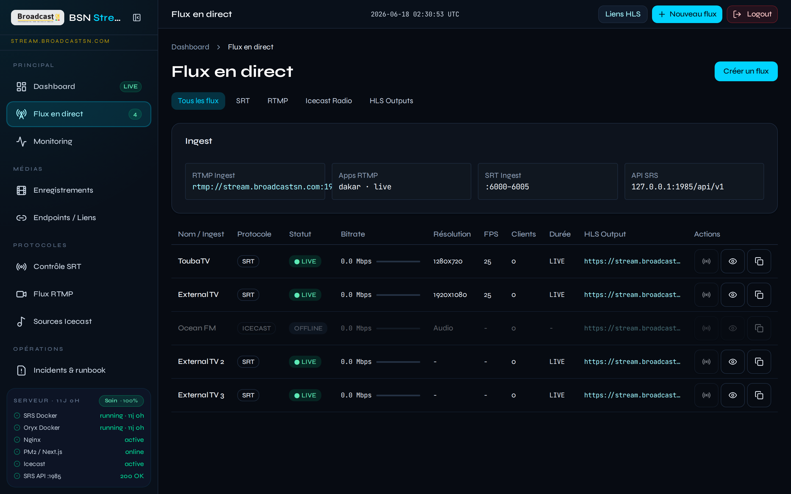
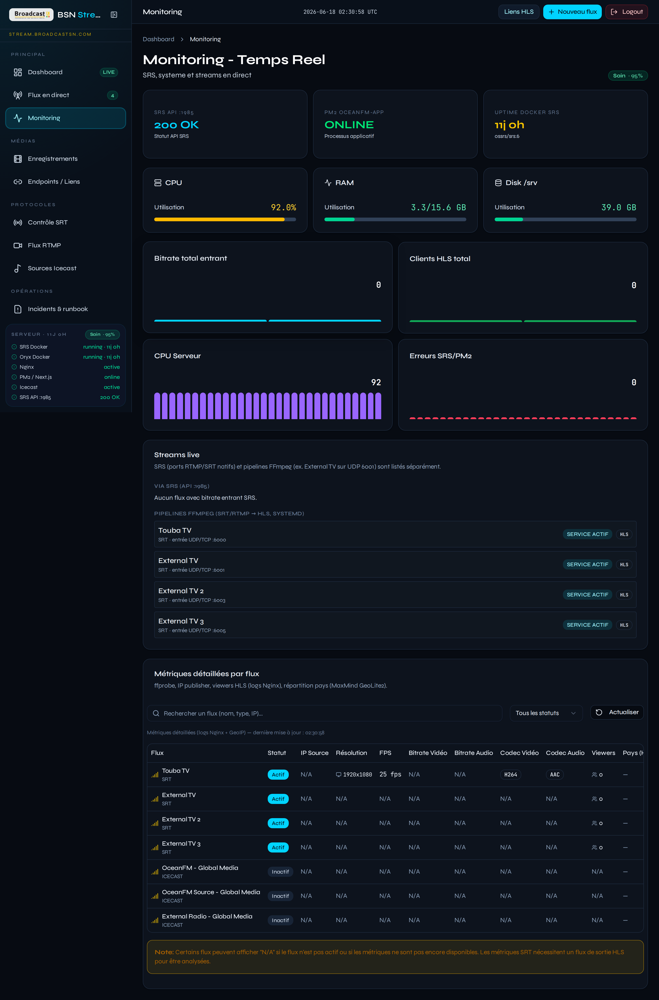
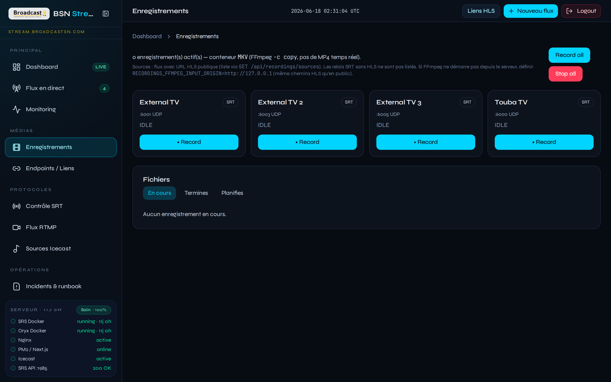
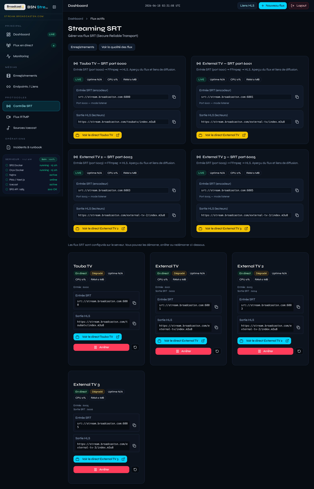
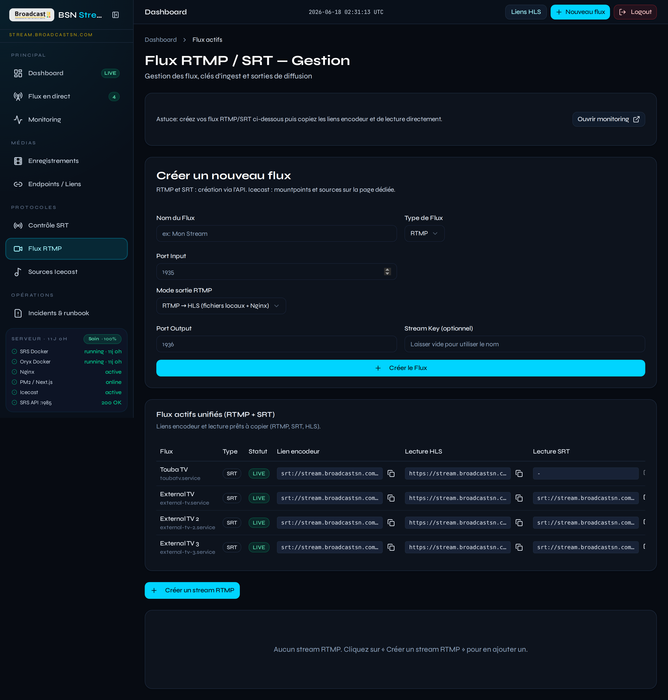
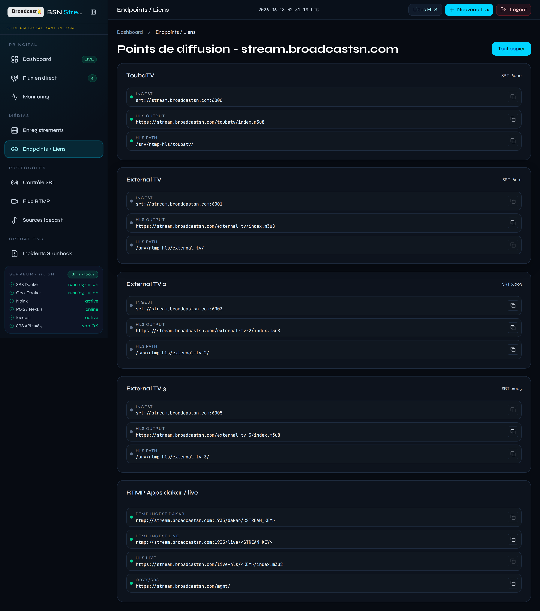
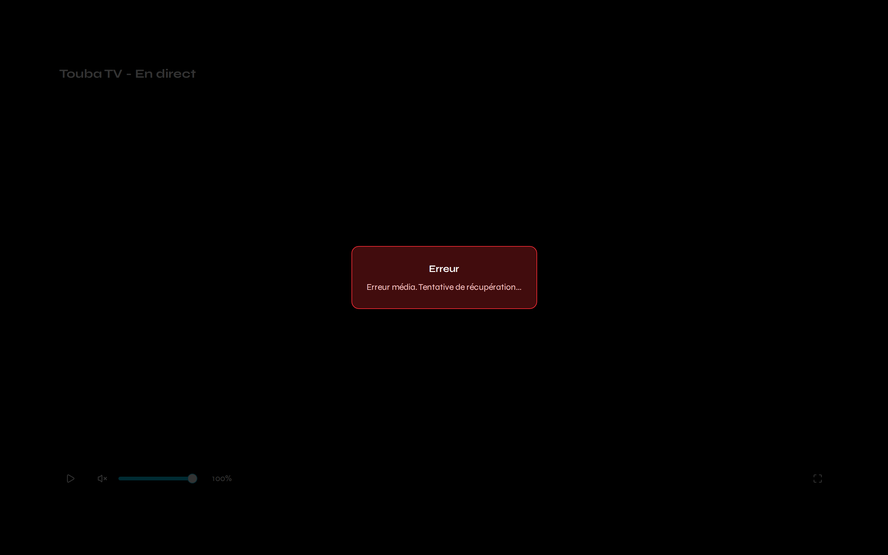

La plateforme tout-en-un pour piloter, diffuser et monitorer vos flux radio & TV
en temps réel — SRT, RTMP, HLS et Icecast, depuis un seul tableau de bord.

Multi-protocoleTemps réelVPS dédiéDakar, Sénégal
Le défi des diffuseurs modernes
Gérer plusieurs chaînes, protocoles et serveurs sans outil centralisé coûte du temps,
augmente les risques d'incident et complique la prise de décision en direct.
Sans plateforme unifiée
Console SRS, Icecast et scripts SRT éparpillés
Aucune vue globale des flux actifs et du bitrate
Interventions manuelles SSH en cas de panne
Enregistrements difficiles à piloter et archiver
Pas de monitoring CPU/RAM/disque intégré
Avec Stream Control Center
Dashboard unique pour tous les flux et protocoles
KPI temps réel : bitrate, clients, CPU, disque
Actions opérateur en un clic (reload SRS, redémarrage)
Enregistrements HLS start/stop depuis l'interface
Alertes, runbook et journaux centralisés
Une infrastructure éprouvée en production
Déployée pour Ocean FM, Touba TV et des flux TV externes,
sur infrastructure VPS haute disponibilité à Dakar.
Interface d'authentification réservée aux opérateurs, avec identité visuelle Broadcast SN.
Connexion JWT, limite de tentatives et session sécurisée.
Auth JWTHTTPSRôles admin

Écran de connexion — accès réservé aux administrateurs
Dashboard temps réel
Vue d'ensemble instantanée : flux en direct, bitrate entrant, enregistrements actifs,
charge CPU/RAM et filtres par protocole et statut. Graphiques interactifs avec historique.

KPI cliquables, filtres SRT/RTMP/HLS/Icecast, graphiques area et actions rapides
Gestion des flux en direct
Tableau détaillé de tous les flux : statut signal HLS, bitrate, résolution, FPS,
clients connectés et liens de sortie. Prévisualisation et copie d'URL en un clic.

Agrégation SRT, RTMP et Icecast — statut live/offline en temps réel
Monitoring système avancé
Métriques serveur détaillées : CPU, RAM, disque, réseau, conteneurs Docker SRS/Oryx
et santé des services systemd. Anticipez les incidents avant qu'ils n'impactent l'antenne.

Métriques système, stack Docker et état des services

Pilotage des enregistrements HLS et gestion de l'espace disque
Enregistrements & archivage
Démarrez et arrêtez les enregistrements HLS depuis l'interface.
Téléchargez, supprimez et surveillez l'espace disque /srv/recordings.
Idéal pour la conformité, le replay et l'archivage éditorial.
Contrôle SRT & RTMP
Créez et gérez vos flux de contribution vidéo sans ligne de commande.
Configuration des ports, modes HLS/restream et intégration systemd automatique.

Contrôle SRT — création et gestion des flux UDP

Flux RTMP dynamiques — publication et restream
Endpoints & lecture publique
Centralisez tous vos liens HLS, RTMP et Icecast. Page watch publique pour la prévisualisation
sans authentification — parfaite pour les équipes rédaction et les partenaires.

Répertoire des endpoints et liens de diffusion

Lecteur public /watch — accès sans login
Stack technique & offre
Solution clé en main : infrastructure VPS, reverse proxy Nginx, moteur SRS/Oryx,
Icecast et application web Next.js — déployée et maintenue par Broadcast SN.